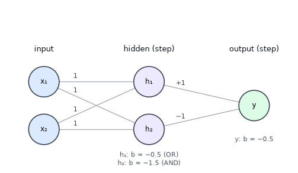
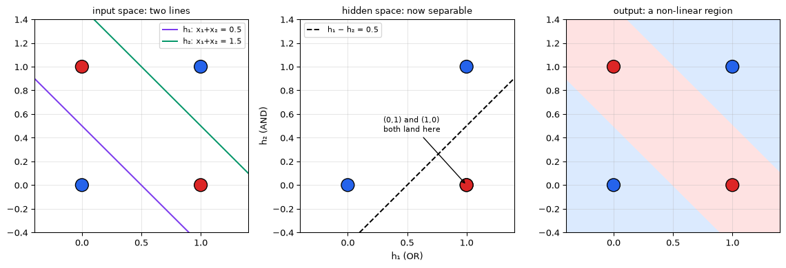
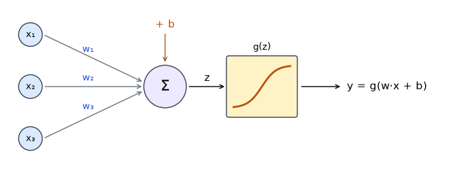
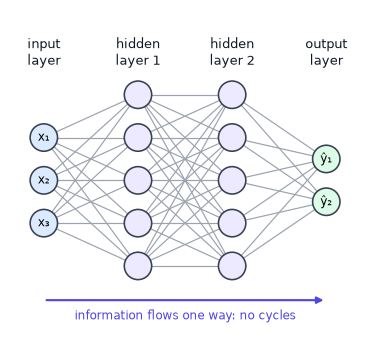
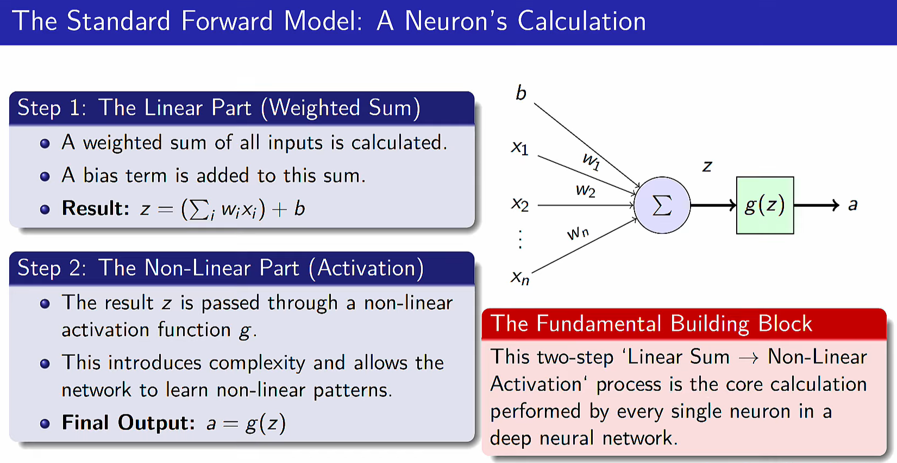
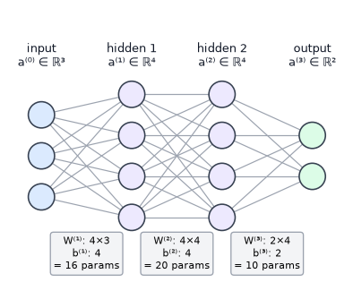
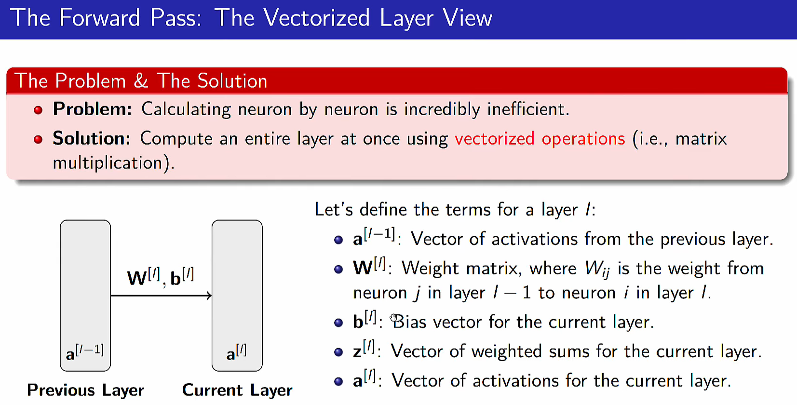
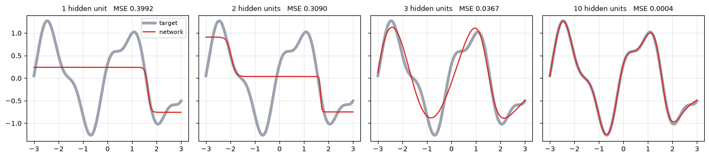
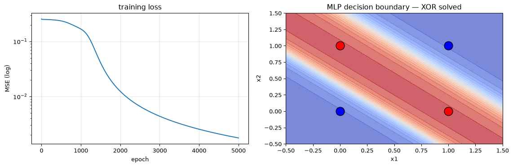

The Multi-Layer Perceptron & Feedforward Networks
The escape hatch from XOR. Stack perceptrons in layers, add a non-linear squashing function between them, and suddenly you can approximate any continuous function. This note covers the MLP, the modern artificial neuron, the feedforward architecture, the forward pass, parameter counting and the universal approximation theorem.
01 The multi-layer perceptron — why stacking works
The single perceptron couldn't do XOR. Two layers can. Here's why.

Python code for this figure
from dlviz import draw_network
import matplotlib.pyplot as plt
fig, ax = plt.subplots(figsize=(7, 3.6))
draw_network([2, 2, 1], ax=ax,
labels=[["x₁", "x₂"], ["h₁", "h₂"], ["y"]],
layer_names=["input", "hidden (step)", "output (step)"],
edge_labels={(0, 0, 0): "1", (0, 1, 0): "1", (0, 0, 1): "1", (0, 1, 1): "1",
(1, 0, 0): "+1", (1, 1, 0): "−1"})
ax.text(2.2, -1.25, "h₁: b = −0.5 (OR)\nh₂: b = −1.5 (AND)", ha="center", fontsize=8.5, color="#4b5563")
ax.text(4.4, -0.75, "y: b = −0.5", ha="center", fontsize=8.5, color="#4b5563")
plt.show()The idea in one line
A hidden layer of perceptrons rewrites the input space into a new representation where the classes are linearly separable.
For XOR: two hidden units learn to detect "at least one input is 1" (OR) and "both inputs are 1" (AND). Then the output combines them: XOR = OR AND NOT-AND.

Python code for this figure
import numpy as np
import matplotlib.pyplot as plt
step = lambda z: (z >= 0).astype(float)
X = np.array([[0, 0], [0, 1], [1, 0], [1, 1]]); y = np.array([0, 1, 1, 0])
hidden = lambda P: np.c_[step(P[:, 0] + P[:, 1] - 0.5), step(P[:, 0] + P[:, 1] - 1.5)] # OR, AND
out = lambda H: step(H[:, 0] - H[:, 1] - 0.5)
col = lambda v: ["#dc2626" if k else "#2563eb" for k in v]
fig, axes = plt.subplots(1, 3, figsize=(12, 3.9))
xs = np.linspace(-0.4, 1.4, 2)
ax = axes[0]
ax.plot(xs, 0.5 - xs, color="#7c3aed", label="h₁: x₁+x₂ = 0.5"); ax.plot(xs, 1.5 - xs, color="#059669", label="h₂: x₁+x₂ = 1.5")
ax.scatter(*X.T, c=col(y), s=200, edgecolors="k", zorder=3); ax.legend(fontsize=8, loc="upper right")
ax.set_title("input space: two lines", fontsize=10)
ax = axes[1]
H = hidden(X)
ax.scatter(H[:, 0], H[:, 1], c=col(y), s=200, edgecolors="k", zorder=3)
ax.annotate("(0,1) and (1,0)\nboth land here", (1, 0), (0.3, 0.45), fontsize=8, arrowprops=dict(arrowstyle="->"))
ax.plot(xs, xs - 0.5, "k--", label="h₁ − h₂ = 0.5"); ax.legend(fontsize=8, loc="upper left")
ax.set_xlabel("h₁ (OR)"); ax.set_ylabel("h₂ (AND)"); ax.set_title("hidden space: now separable", fontsize=10)
ax = axes[2]
xx, yy = np.meshgrid(np.linspace(-0.4, 1.4, 300), np.linspace(-0.4, 1.4, 300))
Z = out(hidden(np.c_[xx.ravel(), yy.ravel()])).reshape(xx.shape)
ax.contourf(xx, yy, Z, levels=[-0.5, 0.5, 1.5], colors=["#dbeafe", "#fee2e2"])
ax.scatter(*X.T, c=col(y), s=200, edgecolors="k", zorder=3); ax.set_title("output: a non-linear region", fontsize=10)
for a in axes:
a.set_xlim(-0.4, 1.4); a.set_ylim(-0.4, 1.4); a.set_aspect("equal"); a.grid(alpha=0.3)
plt.tight_layout(); plt.show()The general recipe
- Input layer — the raw input vector \mathbf{x} \in \mathbb{R}^{d}.
- Hidden layers (one or more) — each unit is a perceptron-like linear combination followed by a non-linear activation.
- Output layer — produces the final answer (a scalar for regression, a class distribution for classification).
The hidden layers do the representation learning; the output layer does the final decision.
What "multi-layer" bought us
- Non-linear decision boundaries. Any curve you can draw, given enough units.
- Hierarchical features. Layer 1 sees raw pixels, layer 3 sees "eye" and "wheel".
- Trainable end-to-end by gradient descent, once you swap the hard threshold for a differentiable activation (next section).
Everything downstream — CNNs, RNNs, transformers — is a specialised MLP with structural tricks (shared weights, attention). The MLP is the common ancestor.
02 The modern artificial neuron
The perceptron's hard threshold made it hard to train. The modern neuron replaces it with a smooth, differentiable activation.

Python code for this figure
import numpy as np
import matplotlib.pyplot as plt
from matplotlib.patches import Circle, FancyBboxPatch
fig, ax = plt.subplots(figsize=(8.5, 3.6))
for name, wname, y in [("x₁", "w₁", 1.1), ("x₂", "w₂", 0.0), ("x₃", "w₃", -1.1)]:
ax.add_patch(Circle((0, y), 0.25, fc="#dbeafe", ec="#374151")); ax.text(0, y, name, ha="center", va="center")
ax.annotate("", (2.4, 0.08 * y), (0.27, y), arrowprops=dict(arrowstyle="->", color="#6b7280"))
ax.text(1.1, 0.55 * y + 0.13, wname, fontsize=10, color="#1d4ed8")
ax.text(2.85, 1.25, "+ b", fontsize=11, ha="center", color="#b45309")
ax.annotate("", (2.85, 0.48), (2.85, 1.15), arrowprops=dict(arrowstyle="->", color="#b45309"))
ax.add_patch(Circle((2.85, 0), 0.45, fc="#ede9fe", ec="#374151")); ax.text(2.85, 0, "Σ", ha="center", va="center", fontsize=16)
ax.annotate("", (4.15, 0), (3.32, 0), arrowprops=dict(arrowstyle="->")); ax.text(3.68, 0.12, "z", fontsize=11)
ax.add_patch(FancyBboxPatch((4.2, -0.6), 1.4, 1.2, boxstyle="round,pad=0.05", fc="#fef3c7", ec="#374151"))
zz = np.linspace(-4, 4, 50); ax.plot(4.3 + (zz + 4) / 8 * 1.2, -0.45 + 0.9 / (1 + np.exp(-zz)), color="#b45309", lw=2)
ax.text(4.9, 0.78, "g(z)", ha="center", fontsize=10)
ax.annotate("", (6.6, 0), (5.7, 0), arrowprops=dict(arrowstyle="->")); ax.text(6.7, 0, "y = g(w·x + b)", va="center", fontsize=11)
ax.set_xlim(-0.5, 9); ax.set_ylim(-1.6, 1.7); ax.set_aspect("equal"); ax.axis("off")
plt.show()The math
For a single neuron with n inputs:
where g is the activation function — sigmoid, tanh, ReLU, or one of their siblings (why it must be non-linear is the next section; the full treatment is note 04).
Two ways to think about it
- Algebraically — a neuron computes a scalar function of its inputs. It's a small non-linear regression.
- Geometrically — the term \mathbf{w} \cdot \mathbf{x} + b = 0 is a hyperplane. The neuron's output tells you which side of the hyperplane the input is on, and how far.
Weights, biases, and what the neuron learns
- Weights w_i — the importance of each input. Large positive w_i = "this input strongly makes me fire". Negative w_i = "this input suppresses me".
- Bias b — the neuron's threshold. Positive b = "fire easily". Negative b = "hard to fire".
These are the parameters that gradient descent adjusts.
03 Why non-linear activations are essential
The one-line reason
Stacking linear functions produces a linear function. So without non-linear activations, a 100-layer network computes the same class of functions as a 1-layer perceptron.
Formally: if g is the identity,
for some collapsed W' and b'. Depth buys nothing.
Non-linearity makes stacking productive
Insert any non-linear function between the layers — sigmoid, tanh, ReLU — and the collapse breaks. Now:
can no longer be simplified. Each additional layer adds expressive power.
That's why the modern neuron uses a smooth non-linearity, and why every layer of every CNN, RNN and transformer has one. Zoom into what the choices are and their pros/cons in note 04.
04 Feedforward architecture

Python code for this figure
from dlviz import draw_network
import matplotlib.pyplot as plt
fig, ax = plt.subplots(figsize=(8, 4.4))
draw_network([3, 5, 5, 2], ax=ax, layer_names=["input\nlayer", "hidden\nlayer 1", "hidden\nlayer 2", "output\nlayer"],
labels=[["x₁", "x₂", "x₃"], None, None, ["ŷ₁", "ŷ₂"]])
ax.annotate("", (6.6, -2.8), (0.0, -2.8), arrowprops=dict(arrowstyle="-|>", lw=1.6, color="#4f46e5"))
ax.text(3.3, -3.25, "information flows one way: no cycles", ha="center", fontsize=9, color="#4f46e5")
ax.set_ylim(-3.6, 4.0)
plt.show()The definition
A feedforward network is one where information flows from input → hidden layers → output, with no loops. Every layer takes the previous layer's activations as input and produces the next layer's activations.
Contrast: recurrent networks (RNNs, LSTMs) have loops back to earlier layers; transformers allow attention between all positions but are still feedforward layer-wise.
The pieces
- Layers — indexed \ell = 1, 2, \ldots, L.
- Weight matrix W^{[\ell]} — connects layer \ell-1 to layer \ell. Shape (n_\ell, n_{\ell-1}).
- Bias vector \mathbf{b}^{[\ell]} — one bias per neuron in layer \ell. Shape (n_\ell,).
- Activation \mathbf{a}^{[\ell]} — the output of layer \ell after applying the activation function.

Concrete example

Python code for this figure
from dlviz import draw_network
import matplotlib.pyplot as plt
fig, ax = plt.subplots(figsize=(8.5, 4.4))
draw_network([3, 4, 4, 2], ax=ax, layer_names=["input\na⁽⁰⁾ ∈ ℝ³", "hidden 1\na⁽¹⁾ ∈ ℝ⁴", "hidden 2\na⁽²⁾ ∈ ℝ⁴", "output\na⁽³⁾ ∈ ℝ²"])
for k, (shape, params) in enumerate([("W⁽¹⁾: 4×3\nb⁽¹⁾: 4", "16"), ("W⁽²⁾: 4×4\nb⁽²⁾: 4", "20"), ("W⁽³⁾: 2×4\nb⁽³⁾: 2", "10")]):
ax.text(1.1 + 2.2 * k, -2.75, shape + f"\n= {params} params", ha="center", fontsize=8.5,
bbox=dict(boxstyle="round", fc="#f3f4f6", ec="#9ca3af"))
ax.set_ylim(-3.5, 3.6)
plt.show()- Input: 3-D vector.
- Hidden 1: 4 neurons. Weight matrix W^{[1]} \in \mathbb{R}^{4 \times 3}.
- Hidden 2: 4 neurons. Weight matrix W^{[2]} \in \mathbb{R}^{4 \times 4}.
- Output: 2 neurons. Weight matrix W^{[3]} \in \mathbb{R}^{2 \times 4}.
Everything else — CNNs, transformers, LLMs — is variations on this theme.
05 The forward pass — vectorised
Push the input through the network to get a prediction. Just matrix multiplies and element-wise non-linearities.
Layer-by-layer equations
For each layer \ell = 1, \ldots, L:
with \mathbf{a}^{[0]} = \mathbf{x} (the input). The final \mathbf{a}^{[L]} = \hat{\mathbf{y}} is the network's prediction.
Vectorising over a batch

For a batch of B inputs stacked as columns of a matrix X \in \mathbb{R}^{d \times B}:
The bias broadcasts across the batch. This is why GPUs are so effective — a single matrix multiply per layer covers hundreds or thousands of examples in parallel.
The recipe as pseudocode
def forward(x, weights, biases, activations):
a = x
for W, b, g in zip(weights, biases, activations):
z = W @ a + b
a = g(z)
return aFour lines. That's the whole forward pass of any MLP — the depth is just a longer loop.
06 Parameter counting
How many numbers is your model actually learning?
The formula
For a layer with n neurons taking m inputs:
Sum across layers for total.
Worked example — the 3-4-4-2 network above
- Layer 1: 3 inputs, 4 neurons. Params = 3 \times 4 + 4 = 16.
- Layer 2: 4 inputs, 4 neurons. Params = 4 \times 4 + 4 = 20.
- Layer 3: 4 inputs, 2 neurons. Params = 4 \times 2 + 2 = 10.
- Total: 16 + 20 + 10 = 46 parameters.
Sanity check — the sizes you meet in practice
| Model | Parameters |
|---|---|
| The XOR MLP (2-2-1) | 9 |
| The 3-4-4-2 example above | 46 |
| MNIST-scale MLP (784-128-10) | ~101k |
| VGG-16 (image classifier, 2014) | 138M |
| GPT-2 small | 117M |
| GPT-3 | 175B |
| GPT-4 (reported) | ~1.7T |
Every parameter is a knob gradient descent turns. The largest language models have more knobs than the Milky Way has stars (a few hundred billion).
07 The Universal Approximation Theorem
The theoretical guarantee that MLPs can, in principle, approximate anything.
The statement (informal)
A feedforward network with a single hidden layer of sufficient width, using a non-linear activation such as a sigmoid (any non-polynomial one works), can approximate any continuous function on a compact domain to arbitrary precision.
Cybenko (1989), Hornik (1991), and others proved variants of this. It says the representational power of MLPs is unlimited.
What it does not say
The UAT is famously misleading if you stop after the headline. It says nothing about:
- How to find the weights. The theorem is existence-only.
- How many neurons you need. The bound is often astronomical.
- Whether one hidden layer is a good choice. In practice, deep networks with modest width vastly outperform wide shallow ones on the same problem.
- Generalisation. It's about fitting the training set, not about doing well on new data.
Why depth wins in practice
- Parameter efficiency. There are functions a deep, narrow network computes that a single hidden layer can only match with exponentially many units. Depth compresses.
- Feature hierarchy. Layer 1 learns edges, layer 3 learns object parts. This structure just doesn't emerge in shallow networks the same way.
- Optimisation. Empirically, deep networks trained with SGD find good minima faster than very wide shallow ones.

Python code for this figure
import numpy as np
import matplotlib.pyplot as plt
from sklearn.neural_network import MLPRegressor
x = np.linspace(-3, 3, 300).reshape(-1, 1)
target = np.sin(2 * x).ravel() + 0.3 * np.cos(5 * x).ravel()
fig, axes = plt.subplots(1, 4, figsize=(14, 3.2), sharey=True)
for ax, width in zip(axes, [1, 2, 3, 10]):
net = MLPRegressor(hidden_layer_sizes=(width,), activation="tanh", solver="lbfgs", max_iter=5000, random_state=0).fit(x, target)
err = np.mean((net.predict(x) - target) ** 2)
ax.plot(x, target, color="#9ca3af", lw=4, label="target")
ax.plot(x, net.predict(x), color="#dc2626", lw=1.6, label="network")
ax.set_title(f"{width} hidden unit{'s' if width > 1 else ''} MSE {err:.4f}", fontsize=10); ax.grid(alpha=0.3)
axes[0].legend(fontsize=8)
plt.tight_layout(); plt.show()The takeaway
UAT is the theoretical license to use MLPs on arbitrary problems. The rest of DL is the practical machinery — depth, activations, initialisation, optimisation, regularisation — that turns "in principle possible" into "in practice trainable".
08 Runnable demo — MLP solves XOR
import numpy as np
import matplotlib.pyplot as plt
# XOR data
X = np.array([[0, 0], [0, 1], [1, 0], [1, 1]], dtype=np.float32)
y = np.array([[0], [1], [1], [0]], dtype=np.float32)
# A 2-2-1 MLP, hand-trained with a simple gradient loop
np.random.seed(0)
n_in, n_hid, n_out = 2, 2, 1
W1 = np.random.randn(n_hid, n_in) * 0.5
b1 = np.zeros((n_hid, 1))
W2 = np.random.randn(n_out, n_hid) * 0.5
b2 = np.zeros((n_out, 1))
def sigmoid(z): return 1 / (1 + np.exp(-z))
def sigmoid_grad(a): return a * (1 - a)
lr = 1.0
losses = []
for epoch in range(5000):
# Forward pass
Z1 = W1 @ X.T + b1
A1 = sigmoid(Z1)
Z2 = W2 @ A1 + b2
A2 = sigmoid(Z2)
# Loss (MSE for simplicity — cross-entropy is covered in note 05)
loss = np.mean((A2 - y.T) ** 2)
losses.append(loss)
# Backward pass (backprop is the topic of note 07 — here it's just the derivation applied)
dZ2 = (A2 - y.T) * sigmoid_grad(A2)
dW2 = dZ2 @ A1.T / X.shape[0]
db2 = dZ2.mean(axis=1, keepdims=True)
dA1 = W2.T @ dZ2
dZ1 = dA1 * sigmoid_grad(A1)
dW1 = dZ1 @ X / X.shape[0]
db1 = dZ1.mean(axis=1, keepdims=True)
W2 -= lr * dW2; b2 -= lr * db2
W1 -= lr * dW1; b1 -= lr * db1
preds = (A2 > 0.5).astype(int).flatten()
print(f"predictions: {preds.tolist()}")
print(f"targets: {y.flatten().astype(int).tolist()}")
print(f"final loss: {loss:.6f}")
print(f"correct: {np.array_equal(preds, y.flatten().astype(int))}")predictions: [0, 1, 1, 0] targets: [0, 1, 1, 0] final loss: 0.001766 correct: True
Visualise the loss and the learned decision boundary
fig, axes = plt.subplots(1, 2, figsize=(12, 4))
# Loss curve
axes[0].plot(losses)
axes[0].set_yscale('log')
axes[0].set_xlabel('epoch'); axes[0].set_ylabel('MSE (log)')
axes[0].set_title('training loss')
axes[0].grid(alpha=0.3)
# Decision boundary
xx, yy = np.meshgrid(np.linspace(-0.5, 1.5, 200), np.linspace(-0.5, 1.5, 200))
grid = np.c_[xx.ravel(), yy.ravel()].T
Z1_g = W1 @ grid + b1
A1_g = sigmoid(Z1_g)
Z2_g = W2 @ A1_g + b2
A2_g = sigmoid(Z2_g).reshape(xx.shape)
axes[1].contourf(xx, yy, A2_g, levels=20, cmap='coolwarm', alpha=0.7)
for xi, yi in zip(X, y.flatten()):
axes[1].scatter(*xi, c='red' if yi == 1 else 'blue', s=200, edgecolors='k', zorder=5)
axes[1].set_title('MLP decision boundary — XOR solved')
axes[1].set_xlabel('x1'); axes[1].set_ylabel('x2')
plt.tight_layout(); plt.show()
Parameter count for this network
Layer 1: 2 inputs, 2 hidden. W1: (2,2) + b1: (2,) = 6 params.
Layer 2: 2 hidden, 1 output. W2: (1,2) + b2: (1,) = 3 params.
Total: 9 parameters for a network that solves XOR.